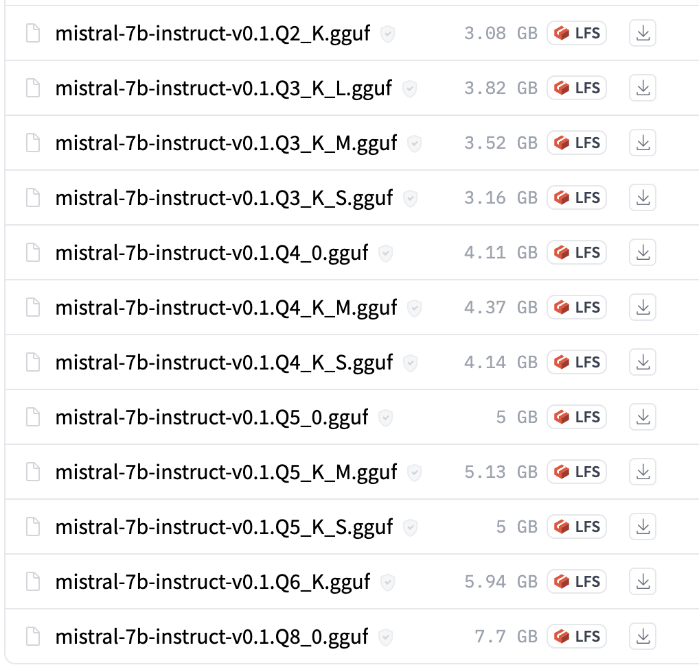

# check if we can import the llama.cpp python bindings
from llama_cpp import LlamaLesson 4: Quantized LLMs with llama.cpp
fractal
python
LLM
Using llama.cpp to run a quantized Mistral-v0.1 model.
Intro
Welcome to the fourth lesson of the course. Let’s recap our progress so far:
- Lesson 1: We made a python environment for LLMs.
- Lesson 2: Set up a personal blog to track our progress.
- Lesson 3: Ran our first LLM with the HuggingFace API.
In this notebook, we will now run a quantized LLM using the llama.cpp library. We choose the powerful and recently released Mistral-7B-Instruct-v0.1 model.
Let’s start by looking at how this quantized model is different from the LLMs we ran in the previous lesson.
Quantized models
llama.cpp is a library that lets us easily run quantized LLMs. What does it mean for a model to be quantized?
Quantizing a model reduces the amount of memory it needs to run. This means we can fit a previously too-large model on less powerful machines, like a laptop or even a smaller GPU.
To be more specific, quantization reduces the number of bits that represent each of the model’s weights. For example, instead of using floats with 32 bits of precision, we can use 8-bit or 4-bit floats to cut down on the overall memory.
LLMs lose some of their accuracy and power when we quantize the weights. But, the performance drop is more than made up by the ability to run larger models on smaller machines.
Overview of llama.cpp
llama.cpp is designed to run quantized LLMs on a Mac. Despite its name, the project supports many other models beyond Llama and Llama-2. There are also python bindings to make our lives even easier.
The picture below comes from project’s README, and shows low-level details about how the repo works and what it supports.

The original project was hacked together in a single evening, and has since become arguably the SOTA for deploying LLMs on CPUs. This is in large part thanks to the dedicated and helpful community behind it.
Below we can see the full list of models that llama.cpp supports as of writing.

The benefits of llama.cpp go beyond its code or models. Folks are always collaborating in Pull Requests to bring in the latest, greatest advances from the flood of LLM progress. Tracking these PRs is a great way of keeping up to date with the field.
The community is also very open to hackers and new ideas: if something works and there’s proof, then it gets merged in.
Next, let’s use llama.cpp to run a quantized Mistral-v0.1 model.
Running Mistral-v0.1 with llama.cpp
This section covers the following:
1. Creating a virtual env for llama.cpp
2. Installing the llama.cpp repo
3. Downloading a quantized Mistral-v0.1 model
4. Running the model directly with llama.cpp
5. Running the model in a Jupyter Notebook
First, we create a mamba environment to keep our work isolated. Then we download and install the repo.
Next we download the actual Mistral model from the HuggingFace Model Hub.
Lastly, we run the Mistral model first with C++ and then in a Jupyter Notebook.
Building llama.cpp
Go ahead and create a new python3.11 mamba environment:
# create an environment for llama.cpp
mamba create -n llama-cpp python=3.11This isn’t strictly necessary for llama.cpp since it uses C++, but we will need the env later for the python bindings. And in any case, it’s best practice to keep our projects in isolated environments.
Next, activate the new environment:
# activate the environment
mamba activate llama-cppWe can now clone the repo.
# clone and move into the llama.cpp repo
git clone https://github.com/ggerganov/llama.cpp
cd llama.cppAfter cloning, we can move inside and prepare it for the build.
There are two options to build llama.cpp:
- GNU Make
- CMake
make works great on Linux, but I’ve had mixed results on Mac. For that reason, we’ll stick with CMake for now.
The best bet is grabbing the CMake installer from the official site. Download the appropriate one for your system and install it.
With CMake installed, we can now follow a standard build process. This might look familiar if you’ve installed other software libraries from source.
Start by creating and moving into the special build/ folder:
# create a build directory and move into it
mkdir build
cd buildThen run the cmake command that prepares the build. Here is where we can also specify other, special build options. For example, on Mac we can pass the LLAMA_METAL=1 flag to use the GPU, or on Linux we can pass the LLAMA_CUBLAS=1 flag to use an NVIDIA GPU.
# prepare the llama.cpp build with Mac hardware acceleration
cmake -DLLAMA_METAL=1 ..
# # or, use the line below on Linux/Window to build for NVIDIA GPUs
# cmake -DLLAMA_CUBLAS=1 ..With the setup files ready we can now build the project:
# build the accelerated llama.cpp project
cmake --build . --config Release Once the build finishes, the binaries to run models will be inside of the build/bin folder. Inside this folder, the executable binary called main is how we’ll be calling llama.cpp to run LLMs.
Now, we are ready to download the Mistral model.
Downloading Mistral-v0.1
We will download the Mistral-7B-Instruct-v0.1 model. What exactly does it do? We can find out by breaking down the name a bit:
- Mistral is the name given by the developers, in this case the Mistral.ai team
- 7B means that the model has 7 billion parameters
- Instruct means that it was trained to follow and complete user instructions
- v0.1 is the release version for this model
Follow the link below to see the model on the HuggingFace Model Hub.
Download link for
Mistral-7B-Instruct-v0.1
Once on the page, click on the Files and version tab near the top. Here you’ll see a big list of different quantized models.

The files shown here are variants of the same, base Mistral model that were quantized in different ways.
The names can be overwhelming. Let’s break them down a bit.
You’ll notice that each file ends with a format like this: Q*_*.gguf.
For example one model from the list is: mistral-7B-Instruct-v0.1.Q4_K_S.gguf. We already covered the first part of the name above.
The Q4 part means that the model was quantized with 4-bits. The K_S part refers to the specific flavor of quantization that was used.
There is an unfortunate tradeoff between quantization and performance. The fewer bits we use, the smaller and faster the model will be at the code of performance. And the more bits we use, the better its performance but the slower the model.
In general, the Q4 and Q5 models offer a good balance between speed, performance, and size.
Let’s get back to running the model.
We choose the Q5_K_M model. It is not much larger than the Q4 models and has a performance better enough to make it worthwhile.
Before grabbing this model, make sure the huggingface-hub CLI is installed. This will let us download models easily in the terminal.
# install a tool to download HuggingFace models via the terminal
pip install huggingface-hubThen move into the models/ folder inside of the llama.cpp repo, and download the our chosen model as follows:
# download the Mistral Q5_K_M model
huggingface-cli download TheBloke/Mistral-7B-Instruct-v0.1-GGUF \
mistral-7b-instruct-v0.1.Q5_K_M.gguf \
--local-dir . \
--local-dir-use-symlinks FalseOnce the model is downloaded, we’ll use the binary created by the build process to run it.
Running the Mistral model
We’ll use the main binary inside of the build/ folder from before to run the Q5_K_M model.
Run the following command to see the Mistral LLM in action! Here we prompt it to tell us how to build a website in 10 steps.
The -m flag points to the model weight we downloaded into the models/ folder.
The -p flag is the prompt for the model to follow.
# from build/, run the official example to see Mistral-v0.1 in action
./bin/main -m ../models/mistral-7b-instruct-v0.1.Q5_K_M.gguf \
-p "Building a website can be done in 10 simple steps:\nStep 1:"Here’s a short snippet from my output after running the command:
Building a website can be done in 10 simple steps:
Step 1: Choose your website builder
Step 2: Select a template and customize it to suit your needs.
Step 3: Add content to your website such as text, images, and videos.
Step 4: Optimize your website for search engines using keywords and meta tags.
Step 5: Publish your website on the web server or hosting provider.
Step 6: Promote your website through social media, email marketing, paid advertising, and other channels.
Step 7: Monitor your website's analytics to see how users interact with it.
Step 8: Keep your website up-to-date by regularly updating content and fixing any bugs or errors.
Step 9: Consider adding e-commerce functionality to sell products or services online.
Step 10: Continuously improve your website's design, usability, and performance to enhance the user experienceCongratulation! We have now:
- Downloaded and built llama.cpp.
- Downloaded a quantized Mistral-v0.1 model.
- Ran the Mistral model on a sample input.
Everything so far was done in C++ via the terminal.
Next, let’s run the Mistral model inside a Jupyter Notebook with the llama.cpp python bindings. This will give us a preview into a fun way of augmenting your work with LLMs: coding alongside an Agent that you can talk to anytime by popping into a code cell.
Running Mistral-v0.1 with python
Make sure to install the llama.cpp python bindings inside of the mamba virtual environment we created earlier.
The pair of pip commands below will install the bindings.
# install the python bindings with Metal acceleration
pip uninstall llama-cpp-python -y
CMAKE_ARGS="-DLLAMA_METAL=on" pip install -U llama-cpp-python --no-cache-dirThe two commands above:
- First uninstall older versions of the bindings, if any are found.
- Then, it installs the bindings with Metal (Mac GPU) acceleration.
Note
Make sure to change the CMAKE_ARGS to CUDA if running on Linux.
After installing the bindings, run the following code snippet in the notebook. This will tell us if the bindings are installed correctly.
If the command above works, we can now run the Mistral-v0.1 model inside a Jupyter Notebook!
We can instantiate a Llama model object and point it to the weights we downloaded earlier. Make sure to change the paths to match your own.
# point the Llama class to the model weights we downloaded in the previous sections
work_dir = "/Users/cck/repos/llama.cpp/"
llm = Llama(f"{work_dir}/models/mistral-7b-instruct-v0.1.Q5_K_M.gguf");Let’s prompt it again to give us 10 steps for building a website.
# asking Mistral for help building a website
prompt = "Building a website can be done in 10 simple steps:\nStep 1:"
output = llm(prompt, max_tokens=512, echo=True);Let’s see what it said!
# viewing the in-notebook Mistral generation
output['choices'][0]['text']"Building a website can be done in 10 simple steps:\nStep 1: Plan the website: Determine what you want to achieve with your website, who your audience is, and how much content you need.\nStep 2: Choose a platform: There are many platforms available for building a website, such as WordPress, Wix, Squarespace, or Weebly. Choose one that suits your needs and budget.\nStep 3: Choose a domain name: Your domain name should be easy to remember and relevant to your business or brand. Register it with a domain registrar such as GoDaddy or Namecheap.\nStep 4: Design your website: Create a layout and choose colors, fonts, and images that align with your brand and appeal to your audience. Use a template or hire a web designer if needed.\nStep 5: Add content: Write and upload the text, images, and videos that will make up your website's content. Keep it easy to read and navigate, with clear calls to action.\nStep 6: Optimize for search engines: Use keywords, meta descriptions, and alt tags to improve your website's visibility on search engines such as Google.\nStep 7: Add functionality: Install plugins or add code to your website to add features such as a contact form, e-commerce cart, or social media integration.\nStep 8: Test and launch: Test your website for any errors or bugs before launching it to the public. Make sure it works on all devices and browsers.\nStep 9: Promote your website: Use social media, email marketing, and other channels to drive traffic to your website and attract new visitors.\nStep 10: Monitor and update: Keep track of your website's performance with analytics tools such as Google Analytics. Make updates and improvements as needed to keep your website relevant and engaging for your audience."Congrats! We’ve now ran the Mistral-7B-Instruct-v0.1 model with llama.cpp in both C++ and python.
The C++ version is ideal for a server or production application. And as for python version, we can now bootup a handy LLM assistant inside a Jupyter Notebook, and ask it questions as we code or develop.
Conclusion
This notebook covered the llama.cpp library and how to use it to run LLMs. We then ran a Mistral-7B-Instruct-v0.1 model with llama.cpp in both C++ and python.
The main goal here was to get you familiar with quantized models, which are the ones we’ll eventually be deploy on our local devices.